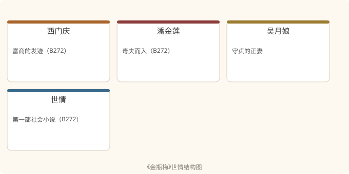

金瓶梅
一、基本信息
| 作者 | 兰陵笑笑生（托名；Britannica：作者不可考——'the work of an unknown author of the Ming dynasty'） |
|---|---|
| 成书/出版 | 最早存世版本 dated 1617（Britannica）；成书于隆庆—万历年间（通说待核） Jinpingmei — Encyclopaedia Britannica（百科全书） |
| 国别/地区 | 中国 |
| 时代 | 古代 · 明（隆庆—万历） |
| 体裁 | 长篇世情小说 |
| 语言 | 汉语（白话·山东方言） |

二、创作背景
Britannica（B272）：金瓶梅为'China's first realistic social novel'（中国第一部现实主义社会小说）——'describes in naturalistic detail the life of the family of a well-to-do businessman, Ximen Qing'（自然主义地细描富商西门庆一家的生活）。
Britannica（B272）：'the work of an unknown author of the Ming dynasty'——作者不可考；最早存世版本 dated 1617。
争议（B272）：有人视为'simple pornography'，另有人认为色情段落服务于作者'moral purpose of exposing the vanity of pleasure'（揭露欢愉之虚妄的道德目的）；'unofficial censorship because of its eroticism'却'became one of China's most popular novels'。
三、内容脉络
西门庆的发迹与六房妻妾：'acquiring six wives and many maidservants'（B272）；第五房潘金莲（Golden Lotus）系'poisoning her first husband'所得（B272）。
家族几近败坏（'nearly corrupted'——B272），正妻守贞并诞一子——'a Buddhist monk to atone for his father's sins'（子出家赎父罪——B272）。
书名由三位女性名字构成（金、瓶、梅——B272 Quick Facts 口径：Gold Plum Vase）。
四、主要人物表
| 人物 | 身份 | 说明 |
|---|---|---|
| 西门庆 | 富商 | 'dishonest means'起家（B272） |
| 潘金莲（Golden Lotus） | 第五房 | 毒杀亲夫而入（B272） |
| 吴月娘 | 正妻 | 守贞（通说待核——B272 述'first wife stays virtuous'） |
五、主题与艺术特点
- 世情小说的开山（B272：first realistic social novel）。
- 色情与道德目的之争（B272：pornography vs exposing vanity）。
- 由《水浒传》'武松杀嫂'一段演化（通说待核）。
六、影响与评论
- Britannica：'the first realistic social novel to appear in China'（B272）。
Jinpingmei — Encyclopaedia Britannica（百科全书） - Britannica：遭'非官方审查'却成为'one of China's most popular novels'（B272）。
Jinpingmei — Encyclopaedia Britannica（百科全书） - 英译：1939年两种译本（The Golden Lotus 等）与 David Tod Roy 五卷本（Princeton，1993—2013）（B272）。
Jinpingmei — Encyclopaedia Britannica（百科全书）
七、阅读建议
- 明代山东方言。
- 版本谱系（词话本/绣像本说——通说待核）。
- 性描写的文学语境。
- 《金瓶梅词话》（人民文学出版社，通说待核）。
- 《新刻绣像批评金瓶梅》（通说待核）。
- 英译 The Plum in the Golden Vase（David Tod Roy 五卷，Princeton——B272）。
先《水浒传》（武松一段）后本作；对照《红楼梦》看世情传统。
八、待核实
- 传统署名'兰陵笑笑生'与作者候选诸说（通说）待核。
- 一百回回目与词话本/绣像本差异待核。
- 中译整理本信息待核。
- '四大奇书'并称出处（冯梦龙说）待核。